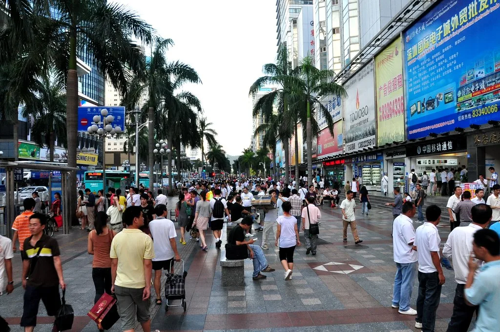
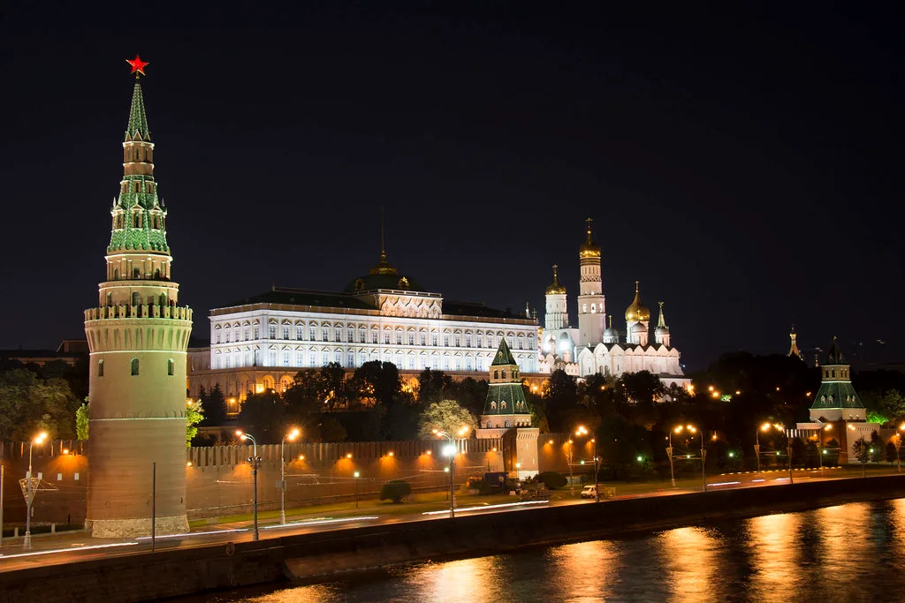

미국과 중국, 러시아 정상이 한자리에 모이는 사상 첫 3자 회동이 추진된다. 미국 백악관은 현지시간 13일 도널드 트럼프 대통령과 시진핑 중국 국가주석, 블라디미르 푸틴 러시아 대통령이 다음 주 중국 선전에서 열리는 아시아태평양경제협력체(APEC) 정상회의를 계기로 목요일에 별도 회동을 가질 계획이라고 밝혔다. 러시아 크렘린궁도 이 일정을 확인했다. 세계 질서를 좌우하는 세 강대국 정상이 3자 형식으로 마주 앉는 것은 전례가 없는 일이다.
회동 장소인 선전은 중국 남부 광둥성의 대표적 기술 산업 도시다. 개혁개방의 상징으로 꼽히는 이곳에서 열리는 올해 APEC 정상회의는 주최국 중국이 외교 무대의 중심에 서는 행사이기도 하다. APEC은 아시아·태평양 지역 21개 회원 경제체가 무역과 투자 협력을 논의하는 협의체로, 해마다 회원국을 돌며 정상회의를 연다. 각국 정상들이 연쇄 양자 회담을 이어갈 것으로 예상되는 가운데, 3자 회동 소식이 알려지면서 회의 전체의 무게중심이 이 만남으로 쏠리는 분위기다.

백악관이 밝힌 의제는 이란 전쟁과 핵무기 감축이다. 백악관 대변인은 트럼프 대통령이 회동에서 핵무기 감축 문제를 논의할 것이라고 설명했다. 반면 우크라이나 전쟁은 이번 3자 대화에서 비중 있게 다루지 않을 방침인 것으로 전해졌다. 미국과 러시아, 중국은 모두 핵보유국이자 유엔 안보리 상임이사국이어서, 세 정상이 군축 문제를 직접 거론하는 것만으로도 상징적 의미가 적지 않다는 평가가 나온다.
다만 구체적인 성과에 대한 기대치는 낮다. 미 행정부 고위 관계자는 로이터 통신에 어떤 형태의 합의에도 이를 것으로 예상하지 않는다고 말했다. 그럼에도 크렘린궁의 드미트리 페스코프 대변인은 이번 만남이 매우 중요한 의미를 지닌다고 강조했다. 성과보다는 세 정상이 같은 테이블에 앉는다는 사실 자체가 국제사회에 던지는 신호가 더 크다는 해석이 나오는 대목이다. 각국이 서로 다른 셈법을 가진 상황에서 첫 만남부터 손에 잡히는 결과를 내기는 쉽지 않다는 현실적 판단으로 풀이된다.
중국 측의 공식 반응은 아직 신중하다. 중국 관영 매체들은 시 주석이 APEC 정상회의 기간 여러 정상과 양자 회담을 가질 예정이라고 보도했지만, 3자 회동에 대해서는 별도로 언급하지 않았다. 주최국으로서 회의 운영 전반을 고려해야 하는 데다, 미국과 러시아 사이에서 균형을 잡아야 하는 중국의 입장이 반영된 것으로 보인다. 회동이 실제로 성사되기까지 세부 형식과 시간을 둘러싼 조율이 이어질 전망이다.

우리 정부에도 이번 회동은 주목할 변수다. 이재명 대통령은 아세안 관련 정상회의에 이어 APEC 정상회의 참석을 위해 선전을 방문할 예정이다. 한반도 정세와 직결된 핵 문제, 공급망과 통상 질서가 강대국 정상들의 대화 테이블에 오를 가능성이 있는 만큼, 정부가 3자 회동의 흐름을 어떻게 읽고 양자 외교에 반영할지가 관심사로 떠올랐다.
전문가들은 이번 만남이 곧바로 갈등 해소로 이어지기는 어렵다고 보면서도, 강대국 간 소통 채널이 열린다는 점에 의미를 둔다. 핵 군축과 중동 정세처럼 어느 한 나라만으로는 풀 수 없는 문제를 정상 차원에서 논의하는 틀이 마련될지가 관건이다. 회동 이후 각국이 발표할 내용의 온도 차도 관전 포인트다. 다음 주 선전에서 세 정상이 어떤 메시지를 내놓을지에 국제사회의 시선이 모이고 있다.